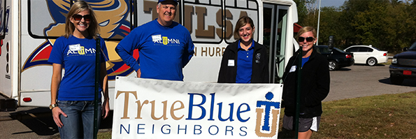
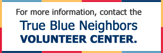

Public Service Internships
Students participating in the Public Service Internship program have the opportunity to complete 160 hours of service with a non-profit, service-oriented agency while earning three hours of academic credit. Interns can expand their educational experience, enhance their career options, increase their understanding of public and community service, and make
worthwhile contributions to the people and organizations they serve. Previous internship sites include: Community Food Bank of Eastern Oklahoma, Community Service Council, Crosstown Learning Center, Gilcrease Museum, Tulsa Economic Development Council, Tulsa Global Alliance, Tulsa HUB, and Tulsa S.P.C.A.
